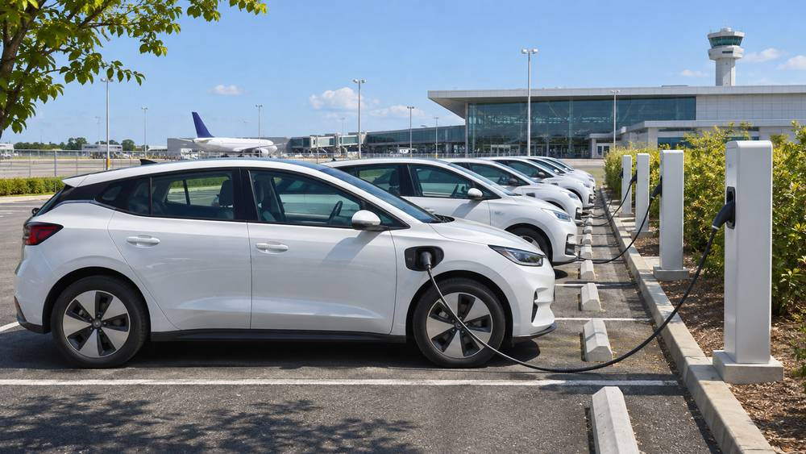

렌터카 전기차 전환지원금, 2027년부터 렌터·리스도

렌터·리스용 전기차는 지금 구매보조금에 최대 180만 원을 더 받는다. 기후에너지환경부는 제주공항 근처 국·공유지 공동 충전거점 방안도 내놨다.
내연차를 전기차로 바꿀 때 주는 전환지원금이 2027년부터 렌터카·리스 차량까지 넓어진다. 기후에너지환경부는 11월 26일 제주 렌터카 업계 간담회 자료에서 이 계획을 밝혔다. 업계의 차량 구입 부담을 덜어 대여요금을 낮추고, 소비자가 전기 렌터카를 더 고르게 하려는 것이다.
전환지원금은 올해 새로 생긴 제도로, 출고 뒤 3년이 지난 내연차를 폐차하거나 판 뒤 전기차를 사면 최대 100만 원을 준다. 하이브리드차는 대상 내연차에서 빠지고, 지원받는 전기차는 승용차와 화물차다. 올해 전환지원금 예산은 1,775억 원이며, 전기승용차 국비는 구매보조금 580만 원을 더해 최대 680만 원이다. 렌터·리스용으로 전기차를 사면 지금도 구매보조금에 최대 180만 원이 더 붙는다.
한국교통안전공단의 2025년 집계로 렌터카 같은 사업용 승용차는 하루 69.3km를 달려 비사업용 30.9km의 두 배를 넘는다. 제주는 등록 차량 가운데 전기차 비율이 10.9%로 전국 4.7%의 두 배를 넘지만, 렌터카만 보면 전국 렌터카와 비슷한 수준이다. 올해 1~10월 새로 등록된 전기차는 33만3,000대로 전체 신규 차량의 24%였고, 지난해 같은 기간보다 70% 넘게 늘었다.
기후부 자료에는 제주공항 근처 국·공유지에 렌터카 공동 충전거점을 만드는 방안도 들어 있다. 간담회는 11월 26일 오전 11시부터 12시 20분까지 제주 쏘카터미널에서 잡혔다. 참석 대상은 김성환 장관과 제주도 기후경제부지사, 제주특별자치도렌터카조합, 쏘카·롯데렌터카·SK렌터카 등 13명이었다. 기후부는 논의 내용을 제주도 등 관계기관과 검토해 정책에 반영할 계획이다.
시민에너지 관점
렌터카 전기차 전환의 쟁점은 차값보다 대여요금과 충전이다. 기후부 자료대로면 렌터카 같은 사업용 승용차는 하루 69.3km를 달려 비사업용 승용차의 두 배를 넘게 탄다. 제주는 전기차 비율 10.9%로 전국의 두 배지만, 렌터카만은 전국 수준에 머물렀다. 2027년 전환지원금 확대와 함께 제주공항 공동 충전거점의 위치·규모가 아직 정해지지 않았다는 점이 이번 자료의 빈칸이다.
출처: 기후에너지환경부 2026-11-26 보도참고자료 「주행거리가 긴 렌터카부터 전기차로…제주 렌터카 업계와 전동화 방안 모색」(탈탄소녹색수송혁신과, 붙임 간담회 개요 hwpx) 원문 보기
출처: 기후에너지환경부 2026-01-29 정책뉴스 「2026년 신설 무공해차 보급정책 ④ 전환지원금」 원문 보기